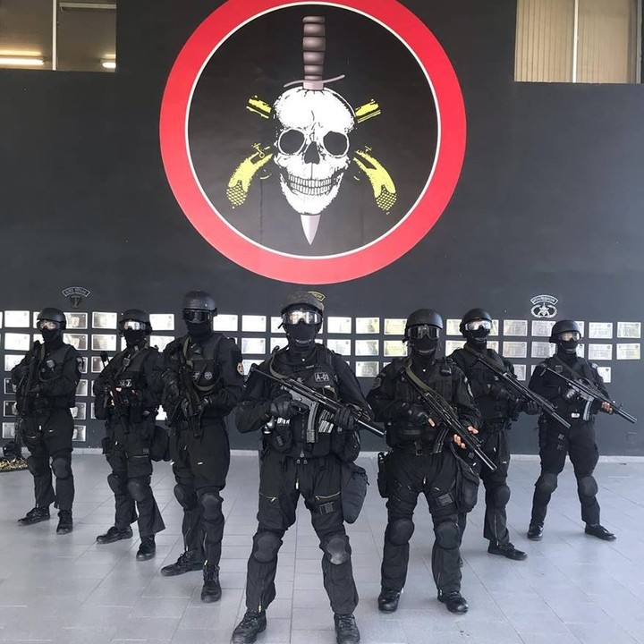

BATALHÃO DE OPERAÇÃO POLICIAIS ESPECIAIS (kauan 1B)
"O Batalhão de Operações Especiais, mais conhecido como BOPE, é uma tropa de elite da polícia, treinada especialmente para o combate em diversas situações e para o resgate de reféns, está presente em alguns estados brasileiros
QUAL SUA FUNÇÃO
A tropa de elite da polícia é especializada em operações complexas, como a negociação de resgate de reféns. O grupo está presente em alguns estados do país
OBJETIVOS
- COMBATER O TRAFICO DE DROGAS
- COMBATER A CRIMINALIDADE
- AJUDA A MISSAO COM REFENS
- A PROTEÇÃO DA SOCIEDADE PUBLICA
- Apoiar administrativamente as unidades integrantes do Comando de Operações Especiais, liberando os seus efetivos de encargos administrativos, possibilitando-lhes concentração exclusiva na atividade de preparo emprego.
